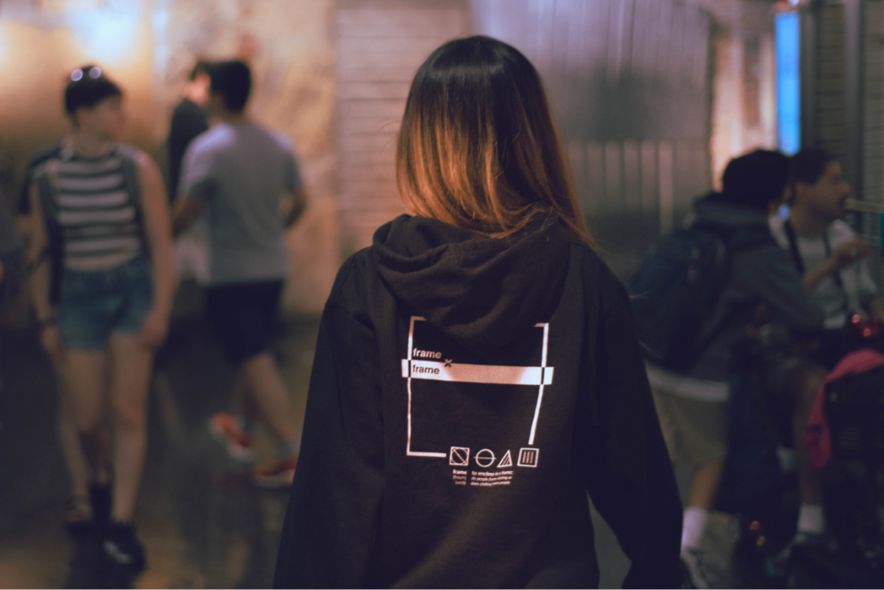

Frame x frame began as a project for Intro to User Experience Design at SVA taught by Professor Lauren Connoly in Summer 2018. Initially starting from a prompt to solve a daily issue, of which I chose online shopping, frame x frame evolved into a personal project that explored graphic fashion design and brand photography alongside its user experience core.
Being an individual project, I carried out user research as well as design of the mobile shopping app, clothing, and necessary photography.
The brand focuses on graphic, basics for casual wear, offering unisex clothing oriented towards the streetwear culture. As such, the target demographic revolves around young adults: college students more discerning of clothing and young professionals looking for weekend outfits.
Nicole M.
college student
"It's a nice side activity to do when you're stressed from schoolwork and need a way to destress in the form of retail therapy"
"I prefer to shop more online than I do in-store because it is more convenient and you can see a wider variety of items in less time."
"The aesthetic of a store are important- I like minimal, subtle stores. 'Sale' is helpful if it looks tasteful.

Bryan T.
software engineer
"it's far easier to browse for new styles and brands online, especially on style-curated stores such as ASOS [and] Backcountry"
"I prefer online for price, flexibility, and browsing, although I nearly always go in-store to try on the clothing first."
"Shopping online is more like... I want to spend money, and I don't know what for yet. But I want to update my clothing in some way."
Vicotria W.
UX design intern
"[I shop] for clothes that would flatter and compliment my body and help increase my self-confidence"
"in most cases, the times in which I do walk into a store tend to be when I've seen a particular piece of clothing in the online store beforehand, and then go to see it in person."
To better understand how the feedback learned from the interviews played into the shopping process, I created a user journey map to place interview points into each specific step of shopping.
Key Insights
online shopping part of "ritual" - to destress, to feel confident, satiate boredom, etc.
shopping should cater to self-confidence and expression of identity rather than necessity
online shopping key for browsing but trying in store is necessary to be confident about fit
"curated" quality of online shops as well as in-store can attract users and keep them shopping
Having determined the target demographic and issues to be tackled, I began with creating the brand identity that would act as the context of the project; building the brand included designing sample products, model photography, and logo design.
The sample clothing design focuses on simple figure-ground relationships. Icons are appropriated and developed from daily mundane sources like garment tags.
Selected clothing articles were designed and prototyped alongside explorations in product/promotional photography. The product photography focuses on building the brand image of urban tranquility - frames of serenity living moment to moment within the bustling Manhattan cityscape.
Low-fi screen focused on the connection to the physical store, allowing for shopping from the inventory of an actual store.
Location of items in cart are also clearly indicated to ease transition of online to in-store experience.
Home feed is organized based on featured collections.
The main result of testing concluded tabs to be unnecessary - users didn't use the my store and profile tabs very often. Moving the tabs to a hamburger menu helped to declutter the screen to focus on browsing.
The original 'My Store" tab has been nested into 'My Favorites.' It wasn't immediately clear how digitally "shopping in a store" worked, so it transitioned into a way to locate saved items in store. The 'find in store' feature is also available for shopping cart items.
A feature prioritized was the interaction that would provide recommendations for fit based on input user data and brands the user was familiar with. Brands often include sizing measurements with their product, but these are often difficult to intuitively understand; here, comparisons with familiar brands are offered as a point of reference.
'Collections' feature a photo heavy layout, taking inspiration from lookbooks and placing such photography directly in the shopping catalogue. Images are an Instagram friendly ratio, allowing for Instagram synchronization and potentially user lookbooks.
Tap to interact!
Much of frame x frame was a study of existing interactions that took place in traditional online shopping experiences. Moving forward, I'd like to explore how the application relates to the brick and mortar experience as well.
The 'locate item in store' feature is a step in the direction but there is opportunity to test ideas like "sending" a shopping cart in store and having selected clothes collected and ready for you to try when you arrive.
Also, perhaps related to my architectural background, I'd like to envision and design the brick and mortar store itself. I'm interested in how the traditional clothing brick and mortar typology reacts to the integration of these digital features.